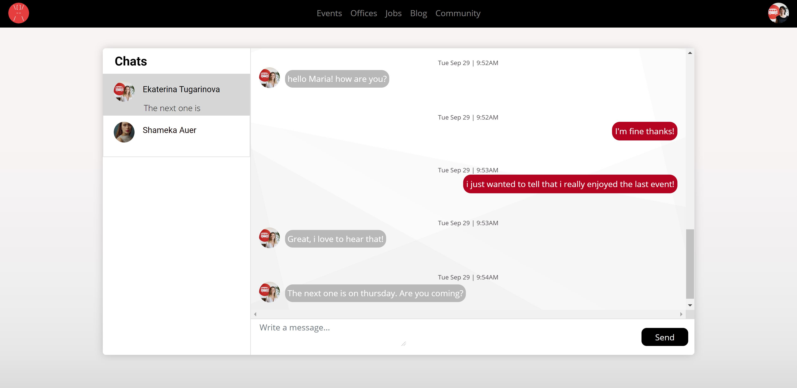
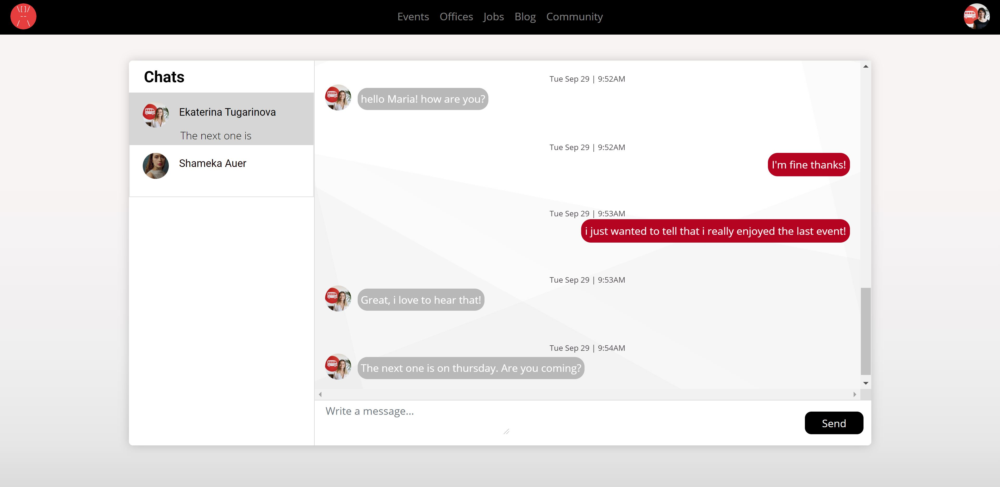

Berlin Architectural Network
Berlin Architectural Network is a Ruby on Rails Application built for the homonymous Meetup group, which i've started in 2017.
Together with my team, we've built this app from scratch with Ruby, HTML, SCSS and JavaScript.
Building a social platform in two weeks, required a good understanding of data base architecture, overall enjoyable user experience as well as skills on time and product management.
View LiveRole
- Le Wagon Alumni
- Product Owner
Team
- Hristian Bozinoski
- Ekaterina Tugarinova
- Zeljka Vujic
Stack
- Trello
- Figma
- Github
- Ruby on Rails
- Postgresql
- Heroku
Gems
- Devise (authentication)
- Pundit (authorization)
- Geocoding with Mapbox
- PG Search
- AJAX in Rails
- Websocket and Action Cable
Goal
This web application was developed as the final project of the Bootcamp at Le Wagon. After describing each step of the user journey and defining the app core features, we designed the database schema and built the corresponding models and respective relationships on Rails.
Phase 1 enabled the user to become a member of the community by signing in to the network.
Phase 2 allowed the user to visit an office's page and check out a member's activity related to that office.
Phase 3 gave the user the possibitlity to RSVP to an event, review it and finally chat with a member about his experience.
Web Stack
Rails
PostgreSQL
Github
Heroku
Challenges and solving process
Database Architecture
The database was a highlight of this project because of its complexity. There was a total of 12 models.
Something unusual about this schema is the comments table that allows foreign keys to be nullified. This decision was made in order to reduce the number of tables. Even though this is valid and works, it's something i would rather break into smaller tables in the future, for the sake of simplicity.
It was nonetheless an opportunity to try and see a different solution on action.
Web Design
One of the critics, while rehearsing for the demo day, was the fact that the all the show pages in our app looked alike, even though the content type was different.
I've learnt that, the user flow defines how content is grouped and displayed within a web page. We've worked with the Bootstrap grid for the layout in contrast to custom hover animations, in order to provide an enjoyable user experience.
The goal was to create a consistent design throughout the app, that allowed at the same time each page to stand out on its own.

 

Agile Mindset
Throughout my professional experience, as an architect, i’ve explored the benefits of agile management on building design. This proved to be very useful throughout the process of building this app.
Despite the short timeline of 2 weeks, we were able to put the project up and running for the demo day and had time to work on extra features. That's because we've implemented scrum rituals, such as standups, and kept a clean kanban board on trello, which helped us visualize our progress and workflow as a team.
I've realized that having a clear understanding of each feature and its priorities while building a minimum viable product, plays a determinant role on the team's productivity and efficiency.